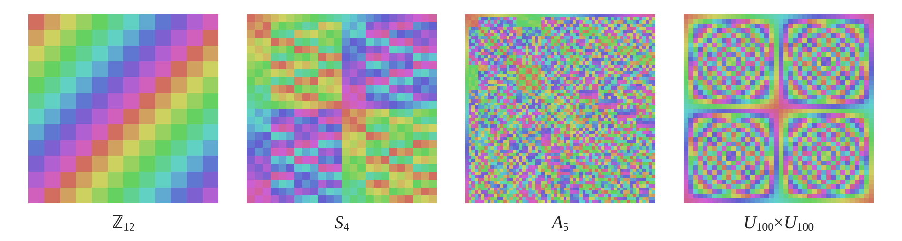

Why a determinant can count paths that never touch, and the Lindström–Gessel–Viennot lemma behind it.
A small Python project exploring Cayley tables and structural patterns in finite groups. It checks the group axioms, finds subgroups, normal subgroups and the centre, and draws a group's Cayley table as a colour grid. [more]
